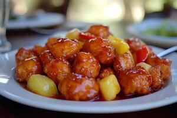

The best Sweet and Sour Chicken recipe

Sweet and Sour Chicken
This recipe is a classic take on the beloved sweet and sour chicken, featuring crispy chicken pieces coated in a tangy sauce with vibrant bell peppers and pineapple.
Ingredients:
- 500g chicken breast, cut into bite-sized pieces
- 1 cup cornstarch
- 2 eggs, beaten
- 1/2 cup vegetable oil (for frying)
- 1 red bell pepper, sliced
- 1 green bell pepper, sliced
- 1 cup pineapple chunks (fresh or canned)
- 1/2 cup sugar
- 1/2 cup vinegar (white or apple cider)
- 1/4 cup ketchup
- 2 tablespoons soy sauce
- Salt and pepper to taste
- 1 tablespoon cornstarch mixed with 2 tablespoons water (for thickening)
- Sesame seeds (optional, for garnish)
- Chopped green onions (optional, for garnish)
Steps
- In a bowl, coat the chicken pieces with cornstarch, shaking off any excess.
- Dip the coated chicken pieces into the beaten eggs, ensuring they are well coated.
- Heat vegetable oil in a large skillet or wok over medium-high heat. Fry the chicken pieces in batches until golden brown and cooked through. Remove and drain on paper towels.
- In the same skillet, add sliced bell peppers and pineapple chunks. Stir-fry for 2-3 minutes until slightly softened.
- In a separate bowl, mix sugar, vinegar, ketchup, soy sauce, salt, and pepper to create the sweet and sour sauce.
- Pour the sauce over the bell peppers and pineapple in the skillet. Bring to a simmer.
- Add the fried chicken pieces to the skillet and stir to coat them evenly with the sauce.
- Mix the cornstarch with water to create a slurry and add it to the skillet. Stir until the sauce thickens.
- Serve hot, garnished with sesame seeds and chopped green onions if desired.
- Enjoy your homemade sweet and sour chicken with steamed rice or noodles!